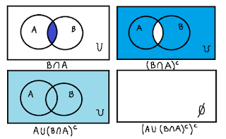
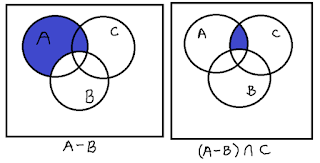
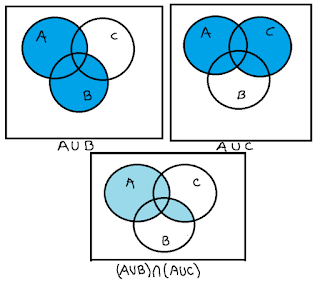
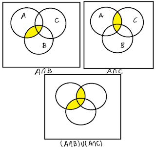
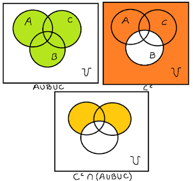

Sean \(U=\{0,1,2,4,6,8,9\}\), \(A=\{0,6,2\}\), \(B=\{2,4,8\}\) y \(C=\{1,6,9\}\). Determine el resultado y dibuja el diagrama de Venn para cada una de las siguientes operaciones:
- \((A\cup(B\cap A)^{c})^{c}\).
Comenzamos calculando \(B\cap A\), es decir, el conjunto de los elementos que tienen en común \(A\) y \(B\): $$(B\cap A)=\{2\}$$ Luego, calculamos el complemento de este conjunto, i.e. $$(B\cap A)^{c}=U-(B\cap A)=\{0,1,4,6,8,9\}$$ Hacemos la unión entre el conjunto anterior y \(A\): $$(A\cup (B\cap A)^{c})=\{0,1,2,4,6,8,9\}$$ Finalmente tendremos que \((A\cup (B\cap A)^{c})^{c}=\emptyset\).
 - \((A-B)\cap C\).
Resolvemos la diferencia de conjuntos, es decir, los elementos de \(A\) que no están en \(B\): $$(A-B)=\{0,6\}$$ Luego hacemos la intersección con el conjunto \(C\), teniendo que $$(A-B)\cap C=\{6\}$$  - \((A\cup B)\cap (A\cup C)\).
Calculando primero ambas uniones, se tiene que: $$A\cup B=\{0,2,4,6,8\}$$ $$A\cup C=\{0,1,2,6,9\}$$ Finalmente, calculamos la intersección entre estos dos conjuntos. $$(A\cup B)\cap (A\cup C)=\{0,2,6\}$$  - \((A\cap B)\cup (A\cap C)\).
Calculando las intersecciones, tendremos $$A\cap B=\{2\}$$ $$A\cap C=\{6\}$$ Luego la unión entre ambos conjuntos obteniéndose que $$(A\cap B)\cup (A\cap C)=\{2,6\}$$  - \(C^{c}\cap (A\cup B\cup C)\).
Desarrollando tendremos lo siguiente: $$\{0,2,4,8\}\cap (\{0,1,2,4,6,8,9\}=\{0,2,4,8\}=C^{c}$$ 